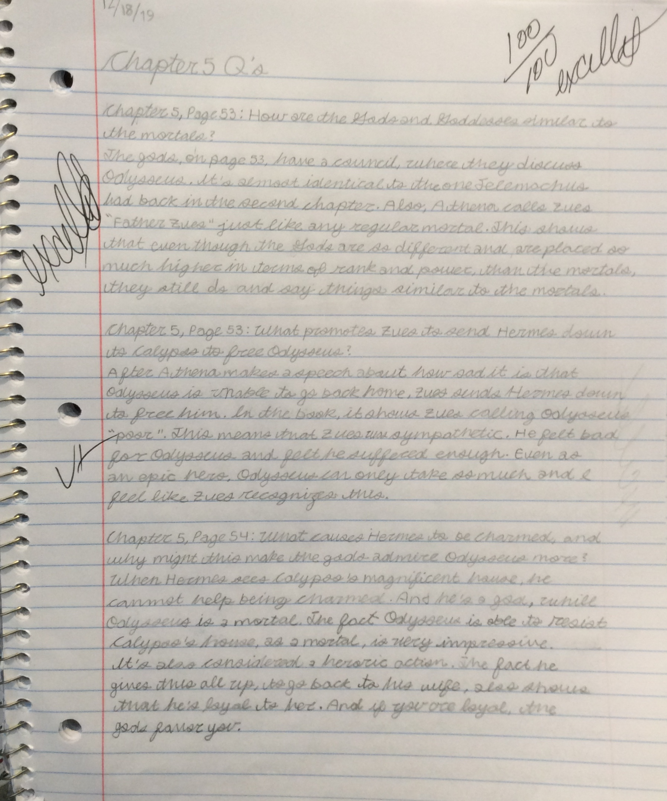

Home Page
Literature
I feel like I have impoved a lot in Literature. During the Scarlett letter, I didn't do enough analyis as I would have liked. I also did not understand a lot of the words in the book. I wasn't very organized, and my notebook was very messy. Now, during the Odyssey, I feel like I am more organized. I now understand what is expected of me. I feel like I understand the Odyssey, more than I understood The Scarlett Letter, mainly because I have been doing more analysis in my homework.
References:

This is an example of one my pages from the annotations that we had to do for chapters 5-6 of the Odyssey!